기술정보
[팩플] 전 CTO부터 국세청장까지… 베일 벗은 카카오 AI 초대 이사진
25일 중앙일보 가 확보한 카카오 AI 이사진 명단에 따르면 초대 이사는 총 7명으로 구성됐다. 사내이사는 정신아 카카오 대표와 신종환 최고재무책임자(CFO)가 맡는다. 기타비상무이사는 신정환 알토스벤처스... — 동향 단계의 사안으로 기술정보 동향 관점에서 사업·기술 파급 범위을(를) 점검할 필요가 있습니다.
출처 중앙일보08.25
AI디자인랩이 매주 전하는 경영진용 Trend & Insight
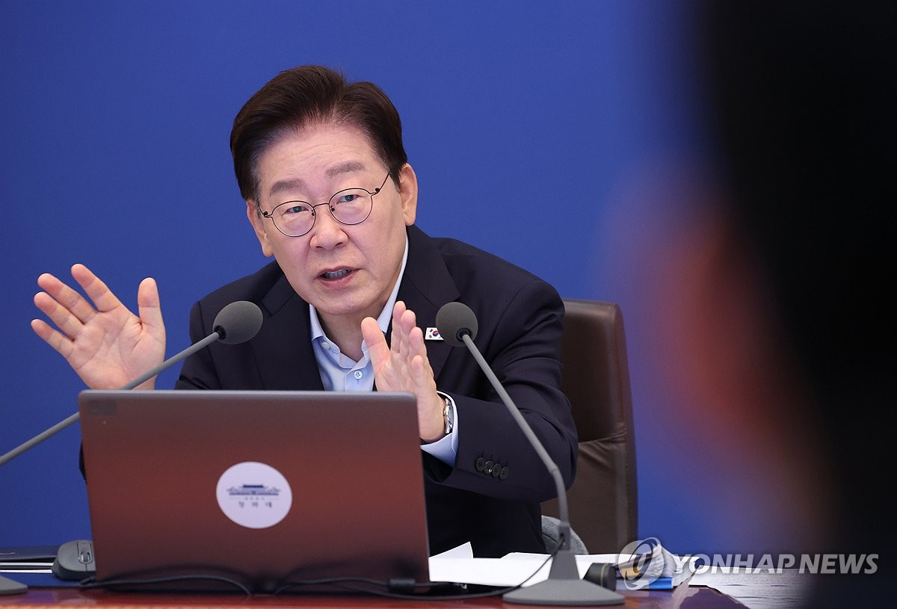
AI 데이터센터 확충을 위한 인프라 사업에 대한 예비타당성 조사가 무더기로 면제된다. 이재명 정부가... 정의선 현대차그룹 회장과 이재용 삼성전자 회장을 만나는 등 '3대 메가 프로젝트' 투자 기업의 총수들과도 접촉면을...
현대건설 시사점 — 동향 단계의 사안으로 AI 데이터센터·전력 인프라 사업 기회 관점에서 사업·기술 파급 범위을(를) 점검할 필요가 있습니다.
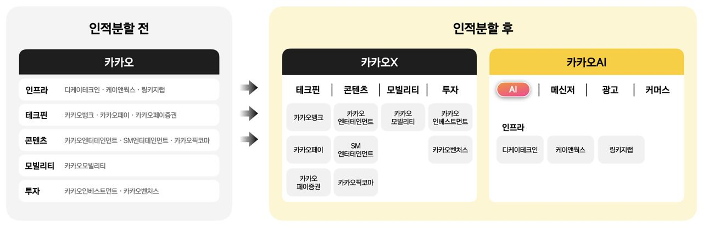
25일 중앙일보 가 확보한 카카오 AI 이사진 명단에 따르면 초대 이사는 총 7명으로 구성됐다. 사내이사는 정신아 카카오 대표와 신종환 최고재무책임자(CFO)가 맡는다. 기타비상무이사는 신정환 알토스벤처스... — 동향 단계의 사안으로 기술정보 동향 관점에서 사업·기술 파급 범위을(를) 점검할 필요가 있습니다.

데이터센터 투자자금을 마련하기 위해 발행한 회사채도 약 750억달러에 달한다. 정부와 빅테크가 같은 투자자의 돈을 놓고 경쟁하기 시작한 것이다. AI 는 전기만 먹는 것이 아니다. — 동향 단계의 사안으로 AI 데이터센터·전력 인프라 사업 기회 관점에서 사업·기술 파급 범위을(를) 점검할 필요가 있습니다.
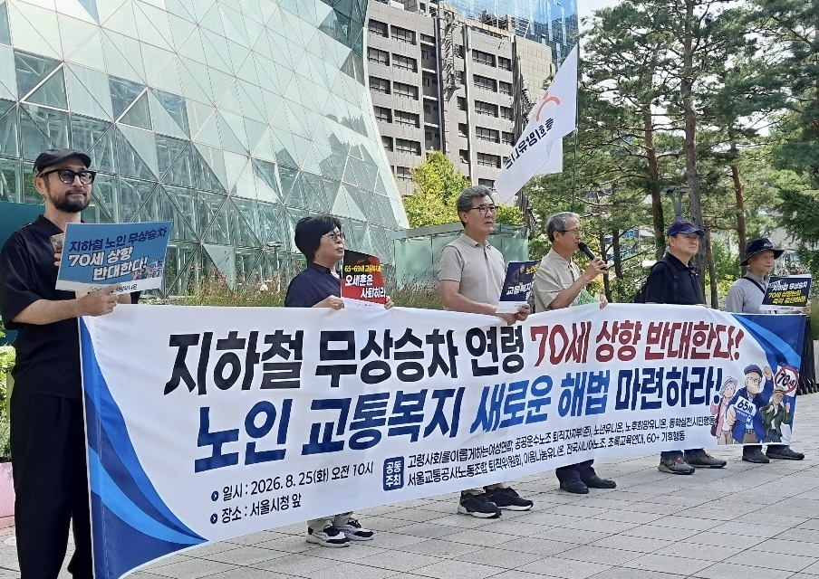
"엔비디아 GPU보다 전기 절반 쓰고도 AI 처리량은 두 배". 최근 매일경제 와 만난 백준호 퓨리오사 AI 대표(사진)는 " 데이터센터 에서 쓸 수 있는 전력과 랙 공간은 정해져 있다"며 "전력 효율이 높다는 것은 전기요금을 줄이는 차원이 아니라 같은 데이터센터 에서 더 많은... — 동향 단계의 사안으로 AI 데이터센터·전력 인프라 사업 기회 관점에서 사업·기술 파급 범위을(를) 점검할 필요가 있습니다.
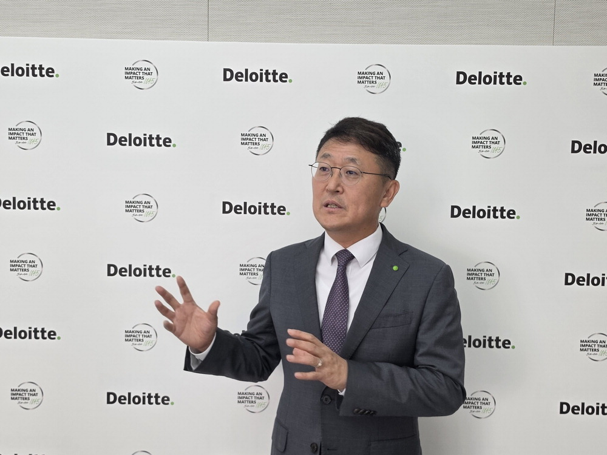
최근 매일경제 와 만나 "금융권 경영진의 관심은 ' AI 를 활용할 것인가'가 아닌 ' AI 를 중심으로 업무와 운영... 펀드 지분을 토큰 형태로 발행하고 스테이블코인으로 대금을 주고받는 구조가 확산될 경우 펀드 가입과 투자 금... — 동향 단계의 사안으로 투자·산업 동향 관점에서 사업·기술 파급 범위을(를) 점검할 필요가 있습니다.
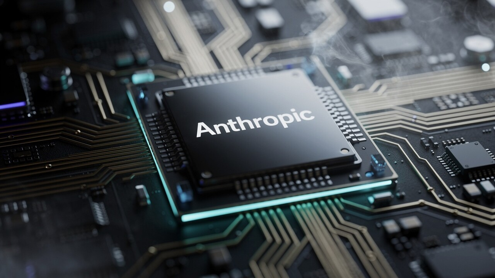
앤트로픽. 구글 TPU 주역 영입…자체 AI 칩 개발 가속 AI타임스. — 동향 단계의 사안으로 기업동향 동향 관점에서 사업·기술 파급 범위을(를) 점검할 필요가 있습니다.
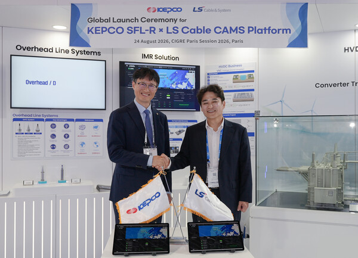
AI 데이터센터 증설에 따른 전력 수요 증가도 장거리·대용량 전력망 투자를 확대하는 요인으로 꼽힌다. 다만 해외 프로젝트 수주로 이어지려면 다양한 전압과 케이블 구조에서 진단 정확도와 장기 신뢰성을... — '수주' 단계까지 확인된 사안으로 AI 데이터센터·전력 인프라 사업 기회 관점에서 후속 발주·계약 조건과 경쟁 구도을(를) 점검할 필요가 있습니다.
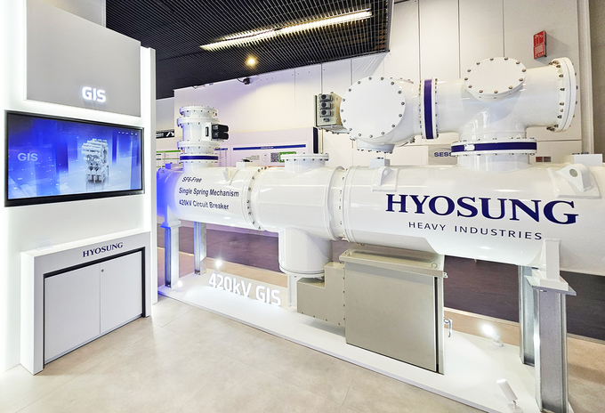
최근 인공지능(AI) 산업 발전과 데이터센터 증설, 글로벌 전력 망 교체 수요가 맞물리면서 전 세계적으로 초고압 전력기기 및 친환경 송배전 솔루션에 대한 수요가 급증하고 있다. 이에 따라 우수한 기술력과... — '증설' 단계까지 확인된 사안으로 AI 데이터센터·전력 인프라 사업 기회 관점에서 사업·기술 파급 범위을(를) 점검할 필요가 있습니다.
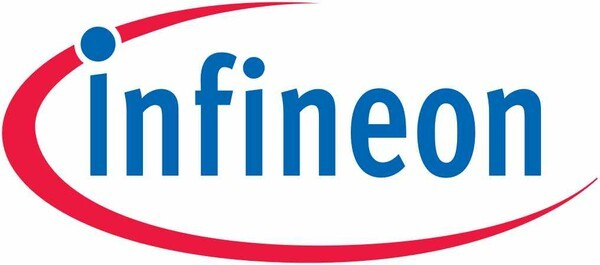
인피니언, AI GPU 전력 제어 승부수…인도 스타트업 C2i 인수. 아담 화이트(Adam White) 인피니언 파워시스템(PS) 사업부 사장은 "이번 인수로 AI 데이터센터 용 전력 공급 솔루션 혁신을 가속화하고 차세대 수직 전력 공급 아키텍처 역량을 확대해 고객에게 상당한 가치를... — '인수' 단계까지 확인된 사안으로 AI 데이터센터·전력 인프라 사업 기회 관점에서 사업·기술 파급 범위을(를) 점검할 필요가 있습니다.
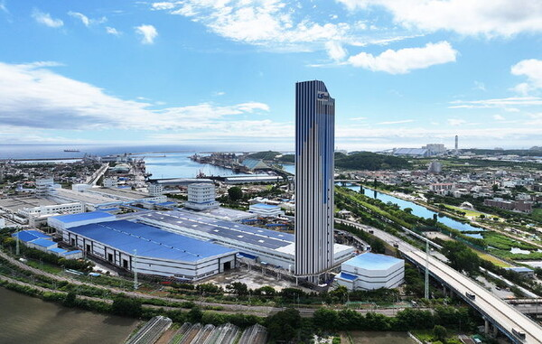
◆LS일렉트릭, AI 데이터센터 전력 망 정조준 LS일렉트릭 또한 HVDC 변환용 변압기(CTR) 관련 풍부한 사업 경험을 바탕으로 글로벌 초고압송전망 및 대형 AI 데이터센터 프로젝트 수주를 가속화하고 있다. HVDC를 통해... — '수주' 단계까지 확인된 사안으로 AI 데이터센터·전력 인프라 사업 기회 관점에서 후속 발주·계약 조건과 경쟁 구도을(를) 점검할 필요가 있습니다.
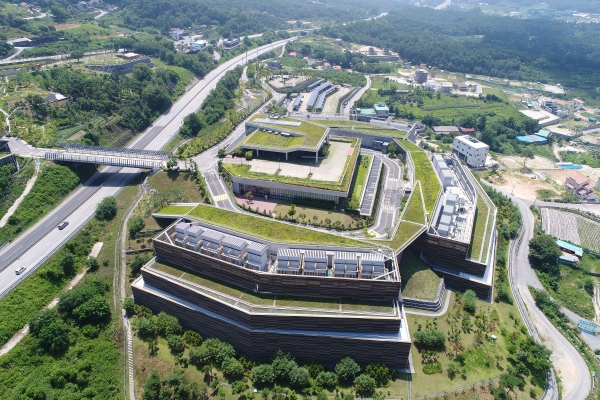
에너지경제연구원이 최근 공개한 ‘ AI 시대 데이터센터 증가의 국내 에너지 소비 시사점’(김철현. 김성균) 보고서는 2060년까지 국내 데이터센터 의 전력소비량을 전망하면서 적극적인 PUE 개선이 이뤄지는 경우와.... — 동향 단계의 사안으로 AI 데이터센터·전력 인프라 사업 기회 관점에서 안전·품질 대응 체계을(를) 점검할 필요가 있습니다.
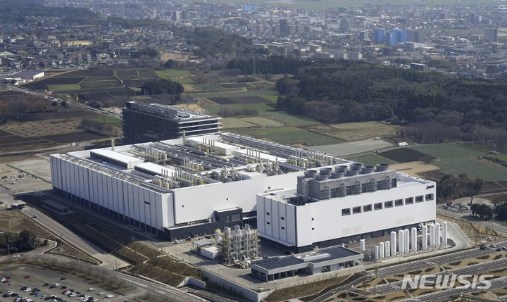
AI 데이터센터 확대로 서버 제조 수탁 물량이 대폭 증가한 게 주된 배경이다. 세계 최대 EMS 훙하이(鴻海)... AI 서버의 전력 소비가 증가하면서 전원 부품과 고효율 전력 공급 시스템에 대한 수요가 확대했다. — 동향 단계의 사안으로 AI 데이터센터·전력 인프라 사업 기회 관점에서 사업·기술 파급 범위을(를) 점검할 필요가 있습니다.